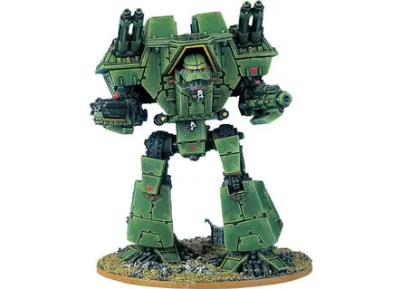
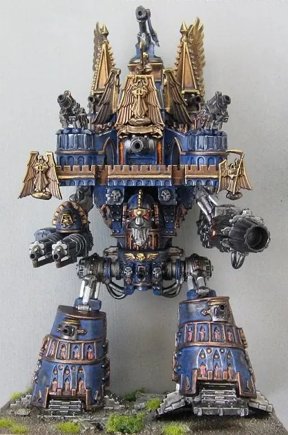
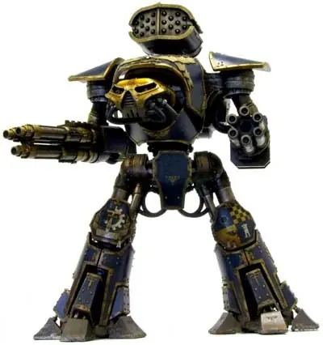
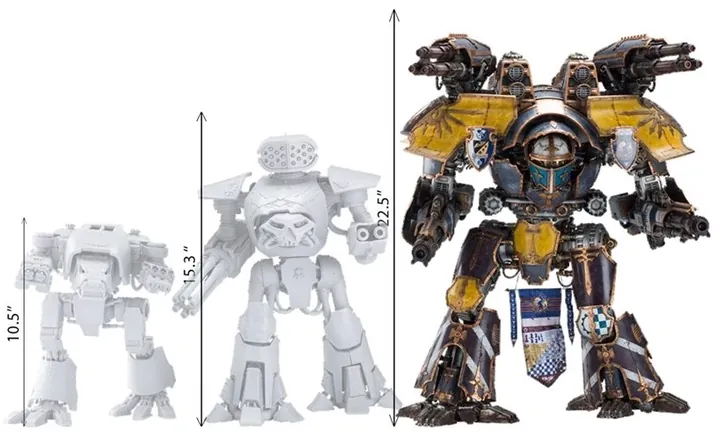
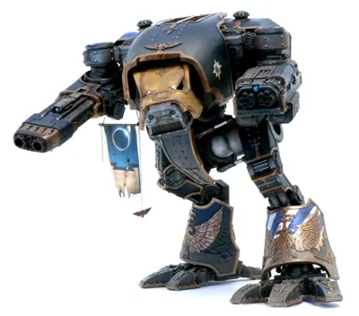
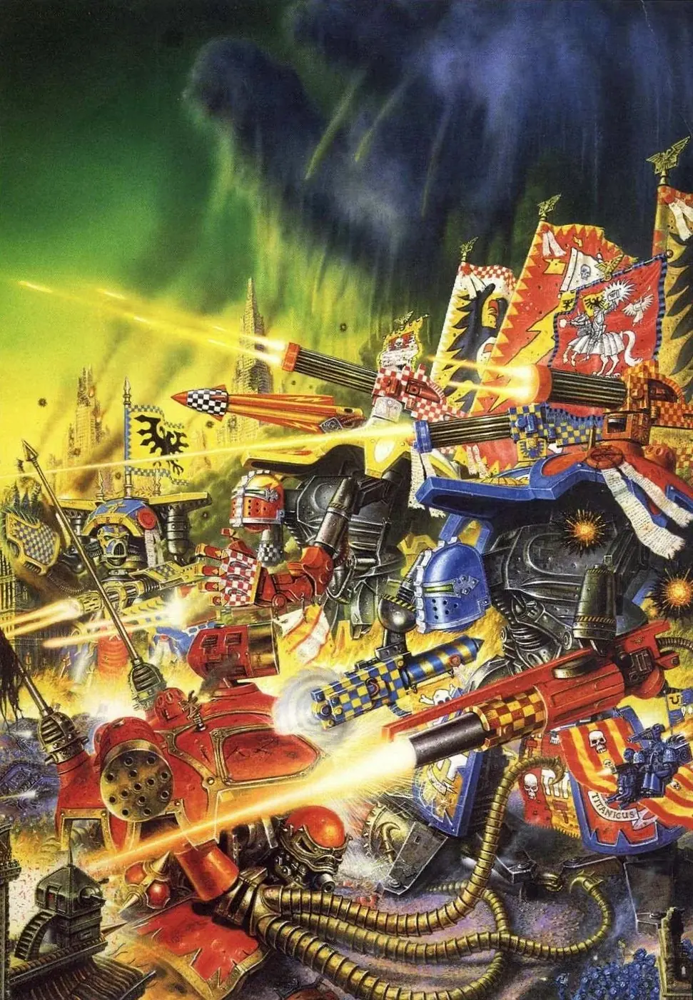

01ภาพรวม

God-Engine หุ่นรบสูงหลายสิบเมตรที่เดินข้ามเมือง ยิงทำลายทั้งกองทัพในนัดเดียว — อาวุธศักดิ์สิทธิ์ที่สุดของ Adeptus Mechanicus
02ต้นกำเนิด
Titan ถูกสร้างขึ้นตั้งแต่ยุค Dark Age of Technology และถูก Mechanicus บูชาเป็นร่างของ Omnissiah (God-Machine) แต่ละ Titan Legion (Legio) ผูกพันกับดาว Forge World เฉพาะ เช่น Legio Ignatum จาก Mars และสู้เคียงข้างจักรวรรดิตั้งแต่ Great Crusade
03เนื้อเรื่องเจาะลึก
ขนาดที่เหนือจินตนาการ
Titan มีหลายขนาด: Warhound (ลาดตระเวน สูงราว 15 เมตร), Reaver (รบหลัก), Warlord (สูงราว 30 เมตร ติดอาวุธที่ทำลายเมืองได้) และ Imperator (ป้อมปราการเดินได้ มีทหารประจำการภายในและโบสถ์บนหลัง) ในยุค Heresy ยังมี Titan ที่ใหญ่กว่านั้นอีก
Princeps — ผู้ที่หลอมรวมกับเครื่องจักร
Princeps ผู้บัญชาการเชื่อมจิตกับ Titan ผ่าน Mind Impulse Unit (MIU) รู้สึกเหมือนร่างของ Titan เป็นร่างของตัวเอง แต่ Machine Spirit ของ Titan ดุร้ายและกระหายการทำลาย Princeps ต้องควบคุมมันไว้ ยิ่งอยู่นาน ยิ่งกลายเป็นส่วนหนึ่งของเครื่อง บางคนถูกบรรจุในแท็งก์ของเหลวถาวร
สงครามกลางเมืองของ Titan
ใน Horus Heresy Titan Legion ครึ่งหนึ่งทรยศ เช่น Legio Mortis (Death's Heads) ที่ต่อสู้กับ Legio Ignatum ในหลายสมรภูมิรวมถึง Siege of Terra — สงครามระหว่างเทพเหล็กที่ทำให้พื้นดินสั่นสะเทือน
04นิสัยและวัฒนธรรม
- Titan แต่ละตัวมีชื่อ ประวัติ และเกียรติยศของตัวเอง
- ทหารในกองทัพเห็น Titan เป็นร่างของพระเจ้า
- Knight ของดาวศักดินามักทำหน้าที่เป็นผู้ติดตาม Titan
05จุดที่น่าสนใจ
- Void Shield โล่พลังงานหลายชั้นที่ต้องยิงให้แตกก่อนจึงทำร้ายตัวได้
- มีเกมแยกของตัวเองชื่อ Adeptus Titanicus
- Titan ที่ถูก Chaos ครอบงำกลายเป็น Daemon Engine ขนาดยักษ์
06ความสามารถพิเศษ
สิ่งที่ทำให้ Titan Legions แตกต่างจากทัพอื่น — ทั้งพลังที่ติดตัวมาทั้งเผ่า/ทัพ และความสามารถของบุคคลสำคัญ
ของทั้งเผ่า/ทัพ

Void Shield หลายชั้น
โล่พลังงานที่ดูดซับกระสุนทุกชนิด ต้องยิงให้โล่แตกทีละชั้นก่อนจึงทำร้ายตัว Titan ได้

อาวุธทำลายเมือง
Volcano Cannon, Plasma Annihilator และขีปนาวุธ Apocalypse ทำลายรถถังหนักหรืออาคารในนัดเดียว

Machine Spirit ที่มีชีวิต
Titan มีบุคลิกของตัวเอง บางตัวดุร้ายจนผู้ขับเกือบควบคุมไม่ได้ Mechanicus เชื่อว่าเป็นจิตวิญญาณของ Omnissiah
07วีรกรรมและเหตุการณ์สำคัญ
Great Crusade
Titan Legion ร่วมพิชิตดาวนับไม่ถ้วน
Horus Heresy
Legio Mortis ทรยศ สงครามระหว่าง Titan เกิดขึ้นทั่วกาแล็กซี
Fall of Cadia
Titan หลายกองป้องกัน Cadia จนดาวแตก
08ยุค 40K — สหัสวรรษที่ 41
ยุค 40K Titan ยังเป็นอาวุธที่หายากและศักดิ์สิทธิ์ การส่ง Titan ลงสนามถือเป็นสัญญาณว่าสงครามนั้นสำคัญที่สุด
09เนื้อเรื่องล่าสุด (Era Indomitus / M42)
หลัง Great Rift Titan Legion หลายกองสูญหายหรือถูกตัดขาด Mechanicus เร่งสร้างและซ่อม Titan ใหม่เพื่อต่อสู้ในสงครามยุค Era Indomitus
10แกลเลอรี


